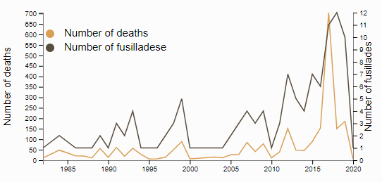

Dashboard: US shootings: A killer perpective
Deconstructed map of US shootings since 1982
The most used words describing the mental health of the killer
Gender of the killer
Ethnicity of the killer
Number of death
